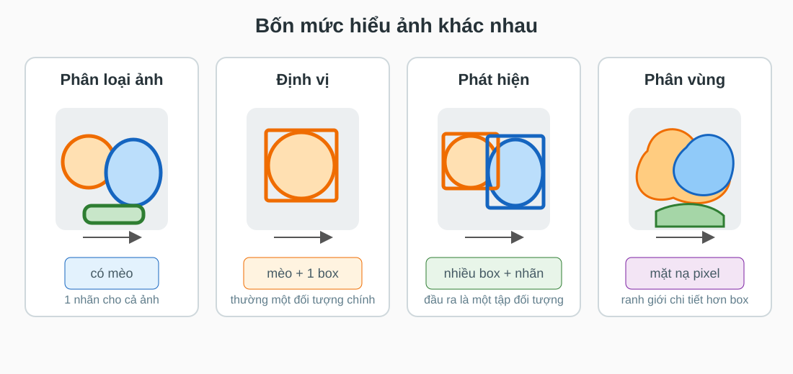
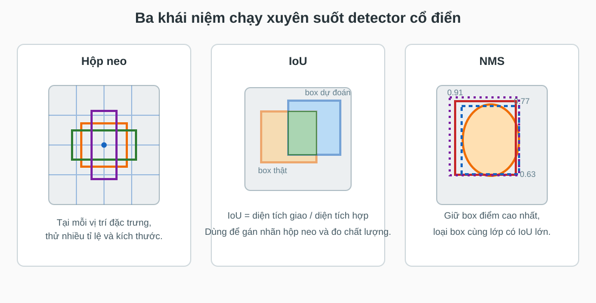
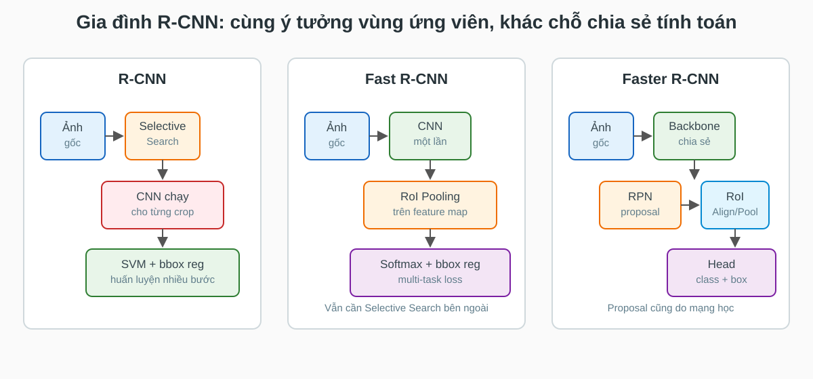
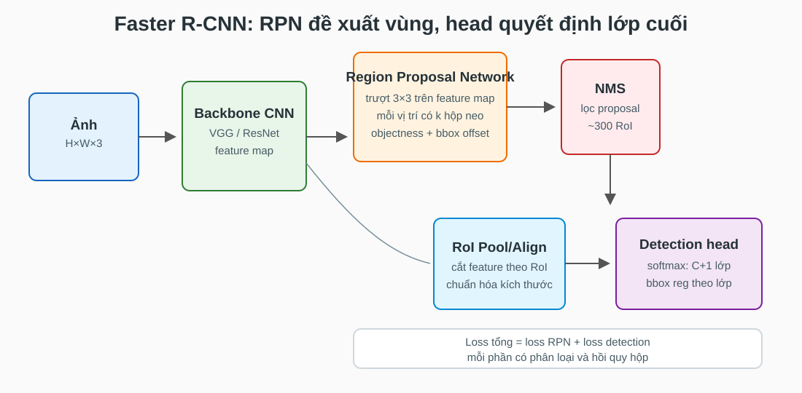
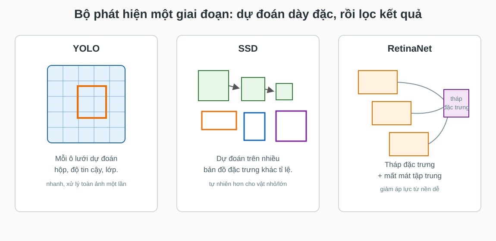
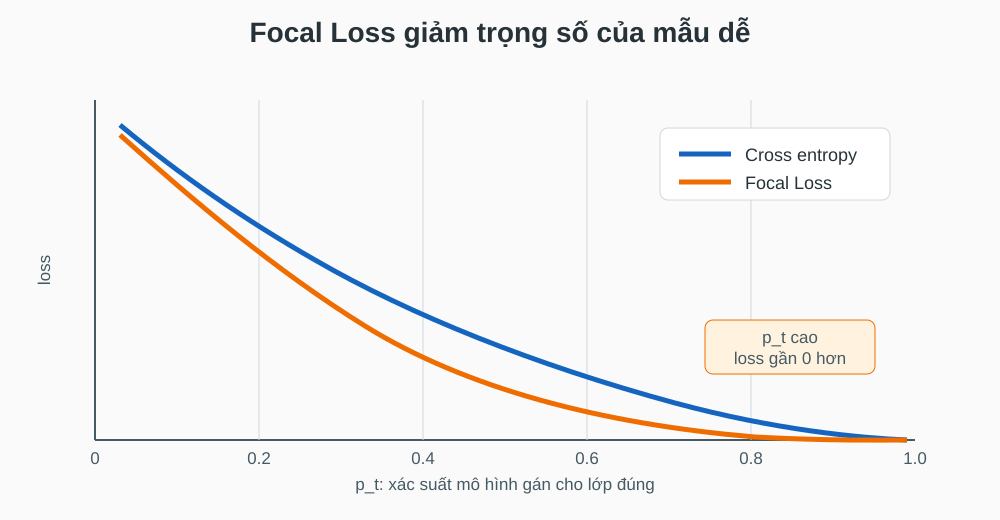
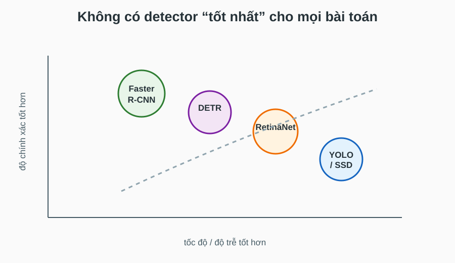
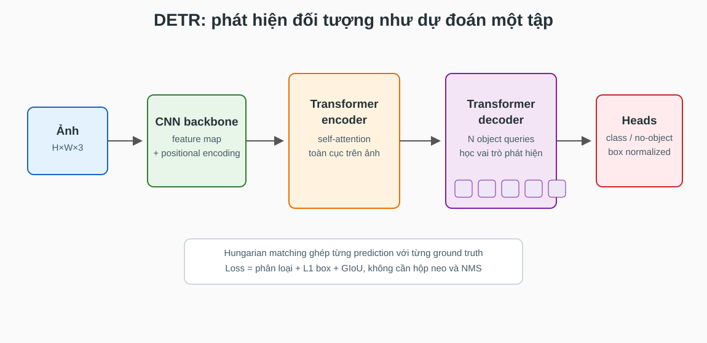

Anchor boxes · IoU · NMS · R-CNN · YOLO · SSD · RetinaNet · DETR
Trường ĐH Công nghệ · Đại học Quốc gia Hà Nội
Đầu vào, đầu ra, dữ liệu và độ đo.
Anchor boxes, IoU, NMS, loss hộp.
R-CNN, Fast R-CNN, Faster R-CNN.
YOLO, SSD, RetinaNet, DETR.
Mục tiêu của bài không phải nhớ tên phiên bản, mà hiểu vì sao các detector được thiết kế khác nhau.

Phát hiện đối tượng phải trả lời đồng thời: có vật gì, ở đâu, và có bao nhiêu vật.
Bài 10 đã xem CNN/ViT phân loại cả ảnh. Bài này thêm một yêu cầu khó hơn: đầu ra không còn là một nhãn cố định.
Làm thế nào biến một ảnh thành một tập hộp bao có nhãn, khi số lượng đối tượng thay đổi theo từng ảnh?
Anchor, IoU, NMS và hồi quy hộp bao hoạt động như thế nào.
Nhìn vào detector và biết đâu là backbone, proposal, head, loss.
Hai giai đoạn, một giai đoạn, và set prediction khác nhau ở giả định nào.
Phân loại, định vị, objectness, focal loss và Hungarian loss.
Hộp bao · Tập đối tượng · PASCAL VOC · COCO · mAP
Khác phân loại ảnh, detector phải sinh số lượng dự đoán thay đổi, nhưng tensor mạng vẫn có kích thước cố định.
ví dụ: người, xe, chó, biển báo.
tọa độ \((x_1,y_1,x_2,y_2)\) hoặc tâm, rộng, cao.
mức tin rằng hộp này là đối tượng thật.
Bản chất của object detection là bài toán dự đoán tập có kích thước biến thiên.
Detector phải giải quyết đồng thời nhận dạng, định vị và loại bỏ dự đoán trùng.
20 lớp, ảnh tự nhiên, chuẩn lịch sử cho R-CNN/Fast R-CNN.
80 lớp, nhiều vật nhỏ, nhiều vật trong một ảnh, độ đo khắt khe hơn.
quy mô lớn, nhãn đa dạng, dùng tốt cho tiền huấn luyện và kiểm thử mở rộng.
Khi đọc kết quả, luôn hỏi: mô hình được đánh giá trên bộ dữ liệu nào và bằng độ đo nào.
Dự đoán phải đúng lớp và hộp dự đoán có IoU vượt ngưỡng, thường 0.5 hoặc nhiều ngưỡng trong COCO.
IoU biến định vị từ cảm giác “hộp khá đúng” thành tiêu chí định lượng.
Trong các box đã báo, bao nhiêu box đúng.
Trong các vật thật, bao nhiêu vật được tìm thấy.
Diện tích dưới đường precision-recall, rồi trung bình qua lớp.
COCO mAP trung bình qua nhiều ngưỡng IoU, nên phạt nặng các box đúng lớp nhưng định vị lỏng.
Anchor boxes · IoU · NMS · Hồi quy hộp · Loss đa nhiệm

Anchor tạo ứng viên cố định, IoU gán nhãn và đánh giá, NMS loại dự đoán trùng sau khi suy luận.
Thay vì dự đoán hộp từ con số 0, mô hình bắt đầu từ các hộp mẫu có sẵn.
Mô hình chỉ cần học độ lệch nhỏ: dịch tâm, đổi rộng, đổi cao.
IoU cao với một ground truth, hoặc là anchor tốt nhất cho vật đó.
IoU thấp với mọi ground truth, được xem là nền.
IoU nằm giữa hai ngưỡng, tránh nhãn mơ hồ.
Chỉ một phần nhỏ anchor là dương, nên mất cân bằng nền - vật là vấn đề lớn.
Mạng học “anchor này phải dịch và co giãn bao nhiêu” thay vì học trực tiếp tọa độ tuyệt đối.
Cách chuẩn hóa theo kích thước anchor giúp loss ổn định hơn giữa vật nhỏ và vật lớn.
Dùng dạng bình phương, giúp tối ưu mượt.
Dùng dạng tuyến tính, giảm ảnh hưởng ngoại lệ.
Cross entropy hoặc biến thể, phạt nhầm lớp hoặc nhầm nền.
Smooth L1, L1, IoU/GIoU; chỉ tính cho box được gán dương.
Detector vừa học “đây là gì” vừa học “dịch hộp như thế nào”.
NMS là thủ thuật hậu xử lý đơn giản nhưng ảnh hưởng mạnh đến precision và recall.
Hai người đứng sát nhau có thể bị xóa mất một người nếu ngưỡng IoU quá thấp.
NMS không nằm tự nhiên trong bài toán học end-to-end.
DETR về sau chọn hướng khác: dùng loss ghép cặp để mô hình tự học không dự đoán trùng.
R-CNN · Fast R-CNN · Faster R-CNN · RPN · RoI Pooling

Dòng R-CNN tiến hóa bằng cách chia sẻ ngày càng nhiều tính toán giữa các vùng ứng viên.
R-CNN chứng minh CNN feature rất mạnh cho detection, nhưng pipeline quá chậm.
Chạy CNN trên cả ảnh để tạo feature map, rồi chiếu proposal lên feature map.
Mỗi vùng ứng viên được biến thành đặc trưng kích thước cố định để đưa vào head.
Tính toán tích chập đắt nhất được chia sẻ cho mọi proposal trong cùng ảnh.
Chia RoI thành lưới \(H\times W\), rồi lấy max trong từng ô. Đầu ra có kích thước cố định dù RoI ban đầu to nhỏ khác nhau.
RoI Pooling là cầu nối giữa proposal hình chữ nhật và head phân loại kích thước cố định.
\(u=0\) là nền, \(u\ge1\) là lớp đối tượng. Dùng softmax cross entropy.
Chỉ tính cho RoI dương. Mỗi lớp có bộ hồi quy hộp riêng.
Selective Search không học từ dữ liệu detection, chạy chậm, và không chia sẻ mục tiêu tối ưu với CNN.
Nếu feature map đã biết vùng nào giống đối tượng, vì sao không để chính mạng đề xuất vùng?

RPN biến bước đề xuất vùng thành một nhánh học được trên cùng feature map với detector.
Mỗi vị trí nhìn một vùng ngữ cảnh nhỏ.
Anchor này có chứa vật hay chỉ là nền?
Dịch anchor về gần vật thật hơn.
RPN không cần biết lớp cụ thể; nó chỉ cần tìm vùng “có vẻ là đối tượng”.
Head cuối chỉ xử lý vài trăm vùng tốt, không phải hàng chục nghìn anchor.
Mỗi proposal được crop từ feature map và có head riêng để phân biệt lớp.
Đổi lại, pipeline phức tạp hơn và thường chậm hơn detector một giai đoạn.
YOLO · SSD · RetinaNet · Focal Loss · Tốc độ và độ chính xác

Một giai đoạn bỏ bước proposal tách rời: mỗi vị trí đặc trưng trực tiếp dự đoán box và lớp.
Chia ảnh thành lưới. Mỗi ô chịu trách nhiệm dự đoán vật có tâm nằm trong ô đó.
Một tensor chứa box, confidence và xác suất lớp cho toàn bộ ảnh.
YOLO mạnh ở tốc độ vì toàn bộ pipeline là một mạng duy nhất chạy một lần.
Phạt sai tâm, rộng và cao của box. Các phiên bản đầu dùng loss bình phương.
Phạt sai mức tin rằng box chứa vật, thường liên quan đến IoU với ground truth.
Phạt sai nhãn lớp tại ô có chứa đối tượng.
Cần giảm trọng số của ô không có vật để nền không áp đảo loss.
YOLO phải cân bằng nhiều thành phần loss vì số ô nền lớn hơn số ô chứa vật rất nhiều.
Dự đoán default boxes trên nhiều tầng đặc trưng: tầng nông cho vật nhỏ, tầng sâu cho vật lớn.
Không chỉ dự đoán ở một lưới cuối; tận dụng tháp đặc trưng tự nhiên của CNN.
SSD giữ pipeline đơn giản nhưng thêm khả năng xử lý đa tỉ lệ.
Softmax cross entropy trên các lớp, gồm cả nền.
Smooth L1 giữa default box đã chỉnh và ground truth được ghép.
SSD dùng hard negative mining để không cho các box nền dễ lấn át quá trình học.
Detector một giai đoạn xem rất nhiều vị trí nền. Các mẫu nền dễ có thể làm loss áp đảo mẫu khó.
RetinaNet dùng FPN để xử lý đa tỉ lệ và Focal Loss để tập trung vào mẫu khó.
RetinaNet cho thấy loss đúng có thể thu hẹp khoảng cách giữa một giai đoạn và hai giai đoạn.

Khi \(p_t\) cao, mẫu đã dễ; hệ số \((1-p_t)^\gamma\) làm đóng góp loss của nó nhỏ đi.

CS231n nhấn mạnh: meta-architecture, backbone, kích thước ảnh, số proposal và phần cứng đều ảnh hưởng kết quả.
Transformer · Object queries · Hungarian matching · Set loss
Dùng anchor/default boxes, gán nhãn thủ công theo IoU, rồi NMS để xóa dự đoán trùng.
Xem detection là dự đoán trực tiếp một tập đối tượng, ghép mỗi dự đoán với tối đa một vật thật.
DETR thay nhiều quy tắc thiết kế bằng một loss ghép cặp toàn cục.

Object queries là các vector học được; mỗi query có cơ hội trở thành một đối tượng trong ảnh.
Có nghĩa hình học ban đầu: vị trí, tỉ lệ, kích thước.
Là vector học được trong decoder; ý nghĩa xuất hiện qua huấn luyện và attention.
DETR không cần biết trước các mẫu hộp, nhưng cần matching để mỗi query học một vai trò riêng.
Có \(N\) dự đoán và \(M\) vật thật. Chọn cách ghép một - một có tổng chi phí nhỏ nhất.
Nhờ ghép một - một, hai prediction không nên cùng nhận một ground truth.
Có thêm lớp “không có đối tượng”.
Kéo tọa độ box về gần ground truth.
Đo chất lượng chồng lấn tốt hơn khi box không giao nhau.
DETR quan trọng vì thay đổi cách đặt bài toán, không chỉ thêm một backbone mới.
| Cách tiếp cận | Box ứng viên | Lọc trùng | Điểm mạnh |
|---|---|---|---|
| Faster R-CNN | RPN + anchors | NMS | chính xác, head RoI mạnh |
| YOLO / SSD | lưới/default boxes | NMS | nhanh, dễ triển khai |
| RetinaNet | anchors trên FPN | NMS | Focal Loss xử lý mất cân bằng |
| DETR | object queries | matching, không NMS | thiết kế gọn, set prediction |
Các file nằm trong thư mục 2526-2/img/lec-11/; có thể thay bằng ảnh mở nếu cần ví dụ ảnh thật.